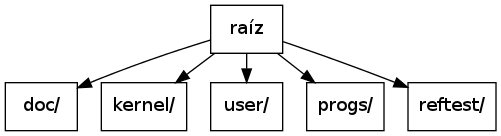

Zafio por dentro¶
Zafio es un sistema operativo básico y poco sofisticado. Algunas de sus características salientes son:
- carga de programas desde ejecutables ELF
- protección de memoria utilizando paginación y espacios de memoria diferentes para las tareas
- manejador de interrupciones que permite el registro de handlers en tiempo de ejecución
- scheduling de procesos utilizando round-robin con un quantums modificables por el usuario
- task-switching por software
- atención de llamadas al sistema (bloqueantes y no bloqueantes)
En este documento se describen estas y otras características de Zafio.
La estructura de directorios¶
Si bien la parte más importante de Zafio está escrita en C, en realidad, el proyecto también se compone de archivos con código assembly de x86, scripts de utilidad y de configuración de herramientas, archivos binarios y documentación. Todo estos archivos están organizados en una estructura de directorios que facilita su búsqueda.
Esta es una síntesis de la estructura de directorios del proyecto:

| Directorio | Contenido |
|---|---|
| raíz | representa la base de la estructura de directorios. Además de contener al resto de los directorios, posee archivos de alcance global en el proyecto. |
| doc/ | contiene los fuentes de la documentación y algunas utilidades para construirla. |
| kernel/ | posee los encabezados y el código del kernel, y además alberga los archivos objeto resultantes de su compilación. |
| user/ | es análogo a kernel/, sólo que para código de usuario. |
| progs/ | contiene ejecutables que Zafio puede ejecutar una vez cargado. |
| reftest/ | es el directorio en el que se encuentra nuestro entorno de pruebas de referencia para el kernel. |
Cargando el sistema¶
Zafio puede ser cargado por cualquier bootloader compatible con la especificación Multiboot [Multiboot].
La especificación Multiboot es relativamente sencilla y existen implementaciones estables de la misma. Además, la especificación asegura algunas características interesantes que tendrán los bootloaders que la implementen, como la obligación de prepararle al kernel un estado inicial en modo protegido con la gate A20 activada y la capacidad de brindarle información sobre la memoria disponible, entre otras.
Nota
Si bien se utilizó GRUB (“Legacy”) como bootloader de referencia, Zafio debería poder ser arrancado por cualquier bootloader que cumpla la especificación Multiboot.
Una vez que el bootloader se ocupa de cargar Zafio en la memoria principal, el código en kernel/src/loader.S toma el control. Este código se ocupa, entre otras cosas, de construir la GDT definitiva del sistema, inicializar estructuras necesarias para el manejo de la memoria y activar el mecanismo de paginación de memoria que provee el procesador (hablaremos más en detalle de esto en la sección La memoria).
El objetivo final de esta pieza de código es dejar todo listo para que pueda darse la ejecución de código del kernel, escrito principalmente en C, que se encuentra mapeado en direcciones virtuales altas (higher half), por encima de los 3GB. Cuando esto es posible, se produce el salto al código presente en kernel/src/kernel.c que se ocupa de inicializar los diferentes subsistemas y comenzar la ejecución de la primer tarea.
Manejo de procesos¶
La ejecución y el manejo de tareas (o procesos [1]) es una parte importante de cualquier sistema operativo. Zafio no es la excepción.
| [1] | Usamos los términos “tarea” y “proceso” de manera intercambiable. |
El descriptor de proceso¶
Cada tarea es representada en el kernel por una estructura task_t, cuya definición puede hallarse en kernel/inc/sched.h:
struct task_t {
// Informacion sobre el programa asociado a la tarea
struct program_t *prog;
// Direccion virtual del directorio de paginas en el
// espacio de direcciones del kernel
void *pd;
// Datos sobre el stack en espacio de kernel
void *kernel_stack;
void *kernel_stack_pointer;
void *kernel_stack_limit;
// Campo para identificacion del proceso
uint32_t pid;
// Informacion para el scheduling
uint32_t quantum;
uint32_t rem_quantum;
uint32_t ticks;
bool waiting;
task_t *parent;
bool waited;
task_t *next;
task_t *prev;
};
Esta estructura contiene todo lo que el kernel precisa saber sobre la tarea. Entre estas cosas, se encuentra la información sobre el programa asociado a la tarea y sobre el espacio de direcciones virtual de la misma e información utilizada para la planificación realizada por el scheduler de procesos.
El scheduler¶
El algoritmo de scheduling utilizado es extremadamente sencillo: round-robin con quantums modificables. A cada tarea se le asigna, inicialmente, un número fijo de unidades de tiempo para su ejecución. Cada unidad de tiempo equivale a una interrupción del timer. El quantum de cada tarea puede luego ser alterado mediante la llamada al sistema nice().
Las tareas pueden estar bloqueadas (waiting = TRUE) o disponibles para ser ejecutadas (waiting = FALSE). Cuando están disponibles, pueden encontrarse en ejecución o a la espera de su turno. Como el kernel sólo maneja un único procesador, en todo momento hay a lo sumo una única tarea en ejecución.
La administración se realiza mediante una lista doblemente enlazada circular de procesos. La cabeza de esta lista es siempre el proceso actualmente en ejecución. Cuando se acaba el quantum de una tarea, la cabeza pasa a ser la siguiente tarea en la lista que se encuentre en condiciones de ser ejecutada. Cuando una tarea finaliza su ejecución (invocando ella misma a la llamada al sistema exit() o a causa de una llamada a kill() por parte de otra tarea) esta es quitada de la lista y los recursos que utilizaba son eventualmente liberados.
Creación de tareas¶
La primer tarea que ingresa al sistema (llamada init) tiene a su cargo la creación de las tareas correspondientes a los programas de inicio. Puede observarse el código de esta tarea en el archivo kernel/src/init.c.
Para la creación de tareas, tanto init como el resto de las tareas hacen uso de la llamada al sistema run(), cuyo código puede hallarse en kernel/src/syscalls.c. run() recibe el nombre de un programa por parámetro y se encarga de:
- conseguir la información correspondiente al programa (entre lo que se halla su ejecutable ELF),
- crear la tarea asignándole un espacio de direcciones propio, mediante create_task(),
- agregar la tarea a la lista de tareas usando add_task().
Las funciones create_task() y add_task() se encuentran en el archivo kernel/src/sched.c.
Hasta este punto, se reserva espacio para el descriptor del proceso y para el stack del kernel de la tarea, pero la reserva y mapeo del stack de usuario y del código y los datos de la tarea en su espacio de direcciones virtual, utilizando la información en el ejecutable ELF correspondiente, se realiza recién cuando a esta le toca ejecutarse por primera vez. El código que se ocupa de esto se halla repartido entre kernel/src/sched.c, kernel/src/sched_helpers.S y kernel/src/progs.c.
Cambios de contexto¶
Zafio realiza los cambios de contexto de las tareas por software. Como consecuencia, hay una única TSS que se utiliza al mínimo: Sólo se utilizan el campo correspondiente al descriptor de segmento del stack en modo kernel (SS0) y el correspondiente al stack pointer en modo kernel (ESP0). Estos campos de la TSS son utilizados por el hardware para cargar los registros SS y ESP0 respectivamente al ocurrir un cambio de nivel al nivel 0.
Los contextos de las tareas son resguardados en sus correspondientes stacks de kernel. Al ocurrir una interrupción mientras se está ejecutando una tarea, el handler de la interrupción inmediatamente almacena el contexto de la tarea en el stack de modo kernel y luego llama a la rutina de atención correspondiente (ver la sección Manejo de interrupciones).
Si la interrupción no deriva en un cambio de contexto, al terminar de manejarla, simplemente se procede de manera inversa, cargando el estado de la tarea desde el stack de kernel y volviendo a ejecutar en modo usuario. Sin embargo, si la interrupción sí derivará en un cambio de contexto, se procede del siguiente modo:
- se guarda el registro EFLAGS (flags del procesador)
- se marca la siguiente tarea en la lista de tareas que se encuentre lista para ser ejecutada como la tarea actual (de no existir tal tarea, el sistema detiene su ejecución hasta que una interrupción ocasione la aparición [2] de una tarea en condiciones de ser ejecutada)
- se carga el espacio de direcciones de la nueva tarea
- se actualizan los valores de SS0 y ESP0 en la TSS del sistema
- se almacena el stack pointer de modo kernel actual en el descriptor de la tarea que estaba ejecutando y se carga el correspondiente a la nueva tarea desde su descriptor
El código de todo este procedimiento puede observarse en las funciones switch_tasks() y switch_context() en kernel/src/sched.c y en el label switch_stack_pointers en kernel/src/sched_helpers.S.
Al retornar de la función que se ocupa del último punto, se buscará la dirección de retorno en este “nuevo” stack. Si la tarea ya había estado en ejecución, simplemente irá retornando hasta llegar a la parte en la que se carga el contexto desde el stack y se vuelve a ejecutar en modo usuario. No obstante, si la tarea es una tarea nueva, su stack fue armado cuidadosamente de manera que al retornar de la función se ejecute el código del label initialize_task en kernel/src/sched_helpers.S. Esta porción de código es la encargada de reservar memoria y realizar los mapeos que ya se nombraron antes en Creación de tareas.
| [2] | El caso común es que todas las tareas se encuentren a la espera de algún evento. Por ejemplo, una tarea puede haber invocado a la llamada waitpid() y encontrarse a la espera de que otra tarea termine. Otra tarea puede estar esperando que se ingrese algo en una terminal. En ese caso, al ocurrir la interrupción del teclado y producirse el ingreso de datos, la tarea en espera sería despertada y se encontraría lista para proseguir su ejecución. |
Manejo de interrupciones¶
La función idt_init() en kernel/src/idt.c se ocupa de inicializar el módulo de manejo de interrupciones. Para esto, escribe los descriptores en la IDT para las interrupciones que serán manejadas. Cada una de las entradas en la IDT se corresponde con un handler distinto generado en kernel/src/idt_handlers.S. La razón por la que hay un handler diferente por cada interrupción es porque es la única forma de poder establecer qué interrupción se está atendiendo, ya que, cuando ocurre una interrupción, se ejecuta el código cuya dirección fue registrada en la IDT, pero el hardware no almacena información que permita identificar de qué interrupción se trata.
Estas rutinas se encargan de guardar el contexto de la tarea en ejecución en el stack de modo kernel y luego llaman a una función común, llamada idt_handle(), pasándole a esta el índice en la IDT de la interrupción ocurrida, un código de error si existiera y el contexto guardado. De allí en más, idt_handle() es quien se ocupa de delegar el manejo de la interrupción en rutinas de servicio, escritas en C, que debieron ser registradas a través de register_isr(). Si no hay una rutina de servicio registrada para la interrupción, se llama a una rutina de servicio genérica por omisión.
Una vez que idt_init() escribió la IDT, registra algunas rutinas de servicio, entre las cuales se encuentran la correspondiente al timer (interrupción 0x20) y la utilizada para recibir llamadas al sistema (interrupción 0x80) y da aviso al procesador de que tiene la IDT lista. Por último, configura los PIC y desenmascara sólo las interrupciones de hardware que le interesarán al kernel.
Atención de llamadas al sistema¶
Las llamadas al sistema se realizan a través de la interrupción 0x80. Antes de generar la interrupción por software, el proceso debe escribir el número correspondiente a la llamada al sistema que desea ejecutar en el registro EAX. Los parámetros de la llamada al sistema deben pasarse usando los registros EBX, ECX y EDX. Al ocurrir la interrupción, la rutina de servicio de la interrupción 0x80 llama a la función correspondiente a la llamada al sistema invocada con los parámetros pasados.
Las llamadas al sistema implementadas hasta ahora son:
| Número | Nombre | Función |
|---|---|---|
| 1 | exit() | finaliza el proceso en ejecución y libera todos los recursos utilizados por este |
| 3 | read() | lee de un dispositivo y almacena lo leído en un buffer provisto por el usuario |
| 4 | write() | escribe en un dispositivo a partir de un buffer provisto por el usuario |
| 5 | ls() | escribe información sobre los programas disponibles en un buffer provisto por el usuario |
| 6 | ps() | escribe información sobre los procesos del sistema en un buffer provisto por el usuario |
| 7 | run() | crea una tarea para el programa que recibe por parámetro |
| 8 | devreq() | pide al kernel que se asigne un dispositivo específico a la tarea en ejecución |
| 9 | devrel() | avisa al kernel que un dispositivo usado por la tarea en ejecución ya puede ser liberado |
| 10 | nice() | permite cambiar el quantum de una tarea |
| 11 | waitpid() | permite a una tarea bloquearse hasta la terminación de una tarea hija |
| 12 | kill | elimina a una tarea de la lista de tareas y libera los recursos que esta ocupaba |
La memoria¶
Gestión de la memoria¶
El bootloader Multiboot es capaz de proveer información sobre la memoria física del sistema. Zafio saca provecho de eso. Al iniciar, utiliza los datos sobre la memoria brindados por el bootloader y asigna una estructura page_t por cada página física disponible para ser usada. Dicha estructura se encuentra declarada en kernel/inc/vmm.h del siguiente modo:
struct page_t {
int count;
page_t *next;
page_t *prev;
void *kvaddr;
};
Los punteros next y prev son utilizados para administrar la lista de páginas físicas libres, count indica el número de referencias de la página y kvaddr representa la dirección virtual en la que está mapeada (si lo está).
En kernel/src/vmm.c se encuentran todas las funciones que se ocupan de gestionar las páginas físicas libres y de mapearlas a los espacios de direcciones virtuales.
En kernel/src/heap.c se encuentran las funciones kmalloc() y kfree(), una implementación de un heap para pedidos de memoria arbitrarios.
Direccionamiento¶
Una de las primeras cosas que se realizan en kernel/src/loader.S (el código al que salta el bootloader) es configurar una GDT definitiva para el sistema. La misma está compuesta por descriptores para:
- Código de nivel 0
- Datos de nivel 0
- Código de nivel 3
- Datos de nivel 3
- TSS del sistema
Tanto los segmentos de código como de datos ocupan todo el espacio direccionable. El principal mecanismo de protección de memoria utilizado en Zafio es la paginación.
Cada tarea tiene su propio espacio de memoria virtual. La siguiente es una representación del mismo para una tarea cualquiera:
+----------------------------+ 0x00000000 \
| ... | |
+----------------------------+ 0x08048000 |
| Código y datos de la tarea | |
+----------------------------+ ~0x0804A000 |
| ... | |
| ... | |
+----------------------------+ 0x3FFFF000 |
| Stack de la tarea | |
+----------------------------+ 0x40000000 |
| ... | |
| ... | |
+----------------------------+ 0x60000000 | Lower half (usuario)
| start_task(main) | |
+----------------------------+ 0x60001000 |
| ... | |
| ... | |
| ... | |
| ... | |
| ... | |
| ... | /
+----------------------------+ 0xC0000000 <--- 3GB
| ... | \
+----------------------------+ 0xC00B8000 |
| Memoria de video | |
+----------------------------+ 0xC00B9000 |
| ... | |
+----------------------------+ 0xC0100000 |
| Loader | |
+----------------------------+ 0xC0101000 |
| Stack del kernel | |
+----------------------------+ 0xC0103000 |
| Directorio de paginas del | |
| kernel | |
+----------------------------+ 0xC0104000 | Higher half (kernel)
| Tablas de paginas | |
| ... | |
+----------------------------+ 0xC0200000 |
| Codigo y datos del kernel | |
+----------------------------+ 0xC02XXXXX |
| Estructuras page_t | |
+----------------------------+ 0xCXXXXXXX |
| ... | |
| ... | |
| ... | |
| ... | |
| ... | |
| ... | /
+----------------------------+ 0xFFFFFFFF
Como se puede ver, el código y los datos del kernel se encuentran siempre en las direcciones altas (higher half) de los espacios de memoria de las tareas, mientras que el código y los datos de usuario se encuentran en la parte baja.
La memoria de usuario (debajo de los 3GB) incluye el código de la tarea, un área para sus datos y su stack. Además, se encuentra mapeada en esta parte la función start_task(). Esta función es la que recibe el control al cargar una tarea nueva. Recibe como parámetro la función que oficia de punto de entrada de la tarea, ya mapeada en el espacio de direcciones virtual, y sólo se ocupa de llamar a esa función y, si esta retorna, invocar la llamada al sistema exit(). De este modo, una vez que la función de punto de entrada de la tarea finaliza, la tarea y los recursos que esta ocupa son liberados.
La memoria del kernel tiene una parte mapeada a la memoria física con un offset de 3GB. Por ejemplo, la dirección virtual 0xC00B8000 se corresponde con la dirección física 0x000B8000, donde se encuentra la memoria de video. Otras cosas mapeadas en las direcciones altas del espacio de memoria virtual son los directorios y tablas de páginas y demás estructuras para la administración de memoria y, por supuesto, el código del kernel.

Contenidos
Related Topics
- Documentation overview
- Previous: Un poco de background
- Next: Instalación y uso